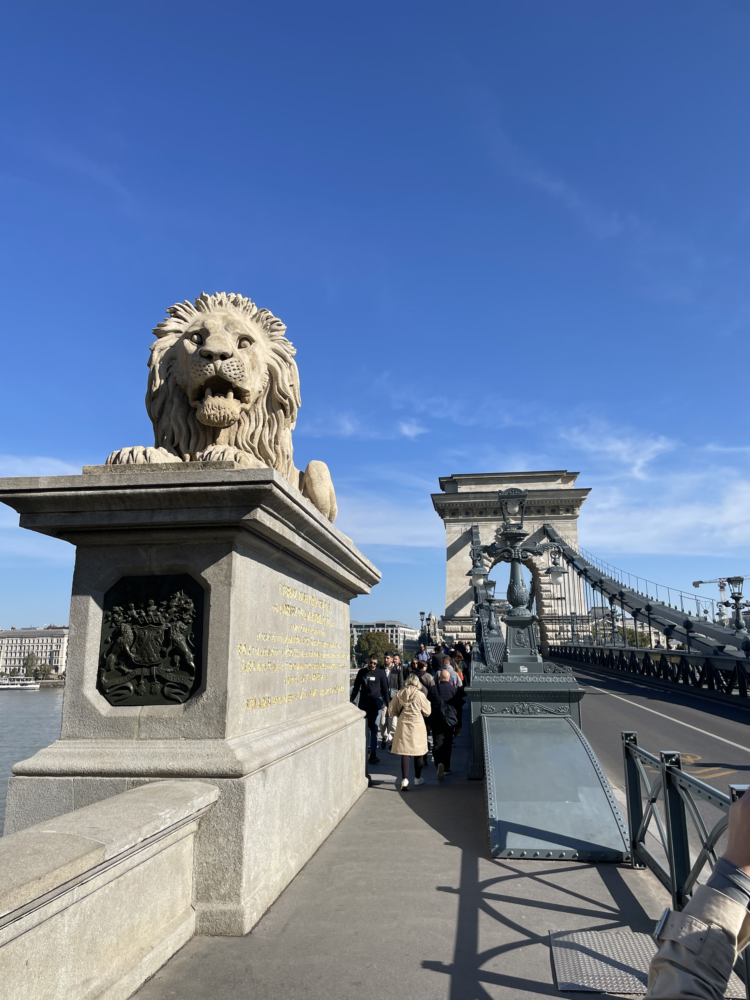
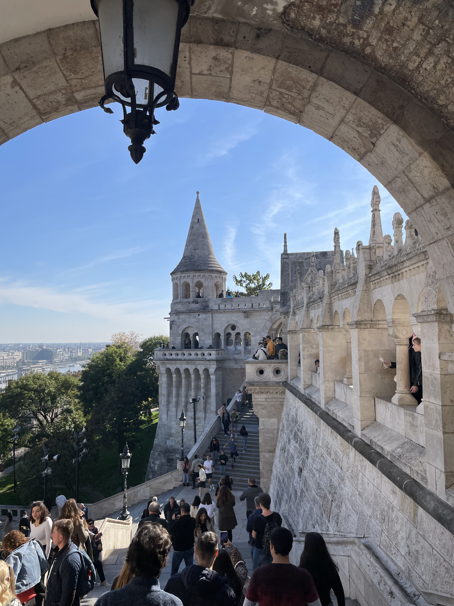
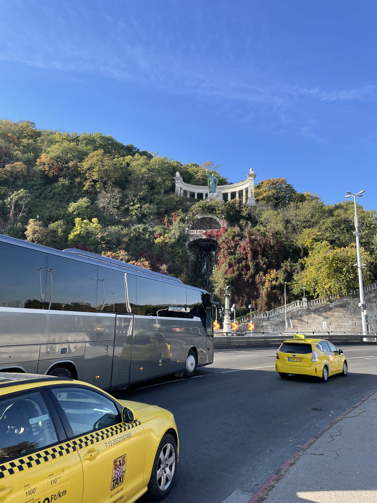
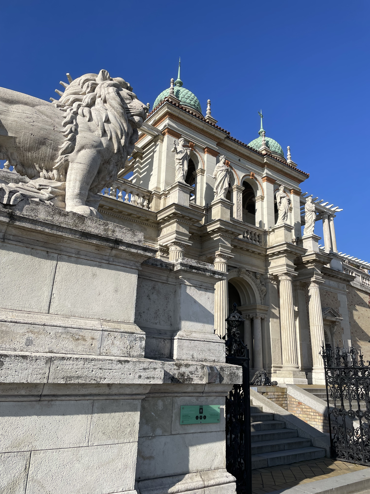
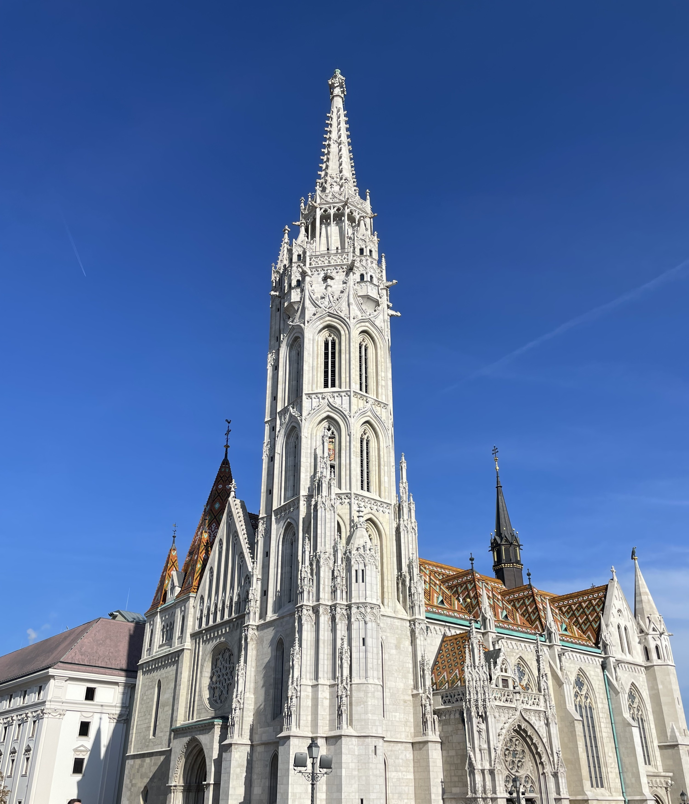
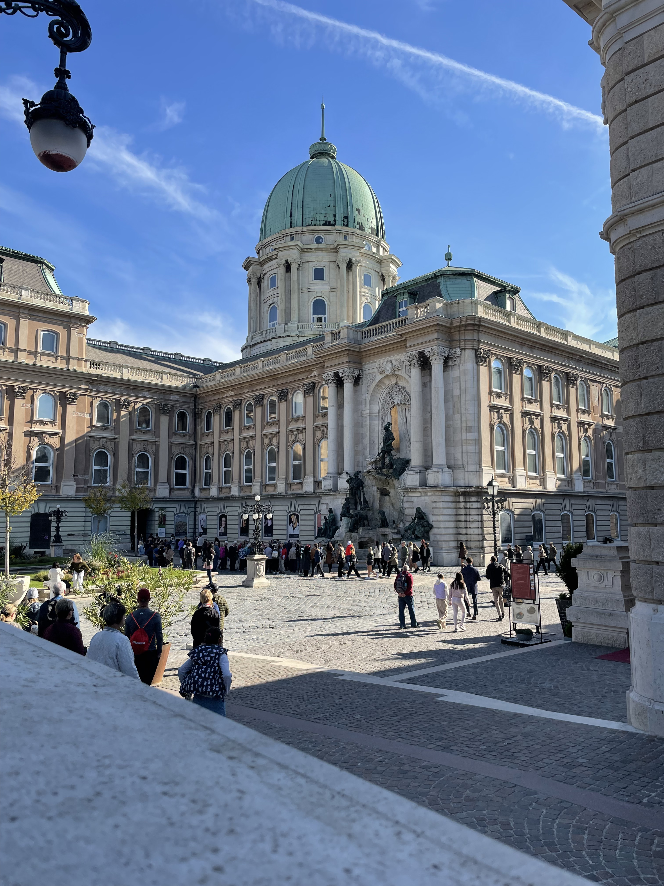
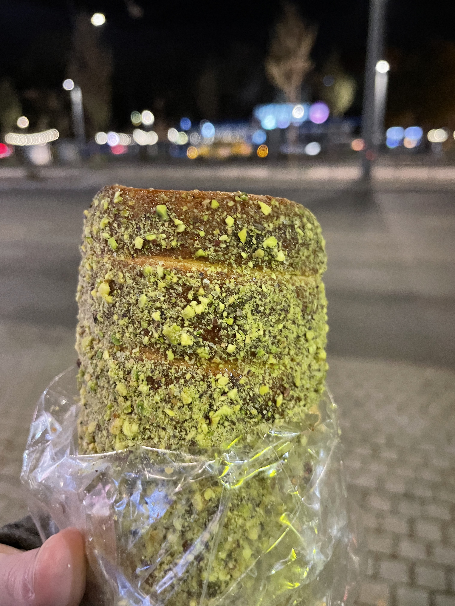

PARLAMENTO

LA PERLA DEL DANUBIO
Hungría es una de las joyas más fascinantes de Europa Central, un país donde la elegancia imperial
se mezcla con tradiciones milenarias. Su capital, Budapest, dividida por el majestuoso río Danubio en dos
partes: Buda, con su castillo histórico y colinas, y Pest, con su vibrante vida
urbana y el icónico Parlamento, es considerada una de las ciudades más bellas del mundo.
Hungría se alza en el corazón de Europa como un destino donde la elegancia imperial de los Habsburgo convive en armonía con tradiciones que se remontan a sus raíces nómadas. Su alma se divide a orillas del Danubio: en Budapest,
la histórica Buda custodia desde sus colinas el pasado señorial del Castillo y el Bastión de los Pescadores, mientras que Pest vibra con la energía de su icónico Parlamento
y una vida urbana inagotable. Es una tierra moldeada por el agua, donde la cultura de los balnearios termales no es solo un lujo, sino un ritual social cotidiano que permite detener el tiempo bajo cúpulas neobarrocas.
PARLAMENTO
PUENTE DE LAS CADENAS
BASTIÓN DE LOS PESCADORES
ESTATUA DE SAN GERARDO
BAZAAR DE LOS JARDINES DEL CASTILLO
IGLESIA DE MATÍAS
CASTILLO DE BUDA
IGLESIA DE SAN ESTEBAN

KÜRTŐSKALÁCS
